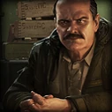
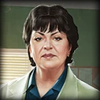
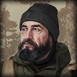

You cannot Escape From Tarkov without any help. That is why you make friends while you're here. These traders will provide you with various tools that will help you survive on your raids, in exchange for your services.  Prapor: Prapor, or Pavel Yegorovich Romanenko, was a Warrant Officer serving the Russian Federation, and was in charge of supply warehouses on the sustaining base enforcing the norvnisk region blockade. During the Contract Wars, he secretly supplied the BEAR PMCs with weapons, ammunition, and various other provisions he had at his disposal. He offers you Post-soviet Bloc Weapons such as the SKS, the AKM, more 5.45 AKs, sidearms like the PM pistol, ammunition for Russian weapons (5.45x39, 9x39, 9x18) and armour.  Therapist: Therapist, or Elvira Khabibullina, was the Head of the Trauma Care Department of the Tarkov Cental City Hospital. As you may have realized by her name and her title, she provides medications, provisions, and also has keys, storage containers, and maps. Fence: Fence, whose name is unknown, is a mysterious trader. He hides his name, and has a smuggler network of trading outlets all across the Norvinsk region. He has a lot of deals with Scavengers, which add to his mystery. He sells to you anything that is sold to him. How you play on your Scav actually plays a role with this character's reputation. Skier: Skier, or Alexander Fyodorovich Kiselyov, traders in the Tarkov Customs District. He was a typical competent businessman, well versed in finance and commerce. He does however have criminal records. He used to trade at the port of Tarkov, having connections with the Customs service. That way, even before the conflict started, he was smuggling, trading in seized cargo and working out gray schemes not only inside the country, but also among Western partners. As a result, he has an assortment of foreign civillian weapons and military equipment. He likes to cooperate with the rest of the traders, however he has a special interest in dealing with Peacekeeper. He offers Weapons, Magazines, Ammunition, Attachments, Storage Containers, and Euros. Peacekeeper: Peacekeeper, or Tadeusz Pilsudksi, is a UN peacekeeping Force supply officer from Poland, based in one of the central checkpoints leading to the Tarkov port zone. The blue helmets (UNTAR forces) have been seen poking their heads into small deals from the very beginning of the conflict, buying everything of value in exchange for western weapons, ammo, and all kinds of military equipment. He offers Western/NATO weapons, ammunitions for said weapons, grenades, attachments, Dollars, and containers. Mechanic: Mechanic, or Sergey Arsenyevich Samoylov, is a former chemical plant foreman, who from the very beginning of the conflict took to weapon modification, repairs, and maintenance of complex equipment and technology. He prefers clandestine solo living and operates discreetly, while placing complicated and challenging tasks above all else. Despite the difficult situation in the region, he retained access to the "mainland" via the Internet and satellite communications. He has accounts in foreign banks, and, if desired, he could easily get out of Tarkov. Everyone in Tarkov trusts him, from Scavs to Scav Bosses, as he can help establish network communications in the conditions of complete destruction and blockade of the city. He offers Western/NATO weapons, Magazines, Ammunition, Attachments, Special equipment (Markers, Jammers, etc), Storage containers, and even Keycards for the TERRAGROUP Laboratory. Ragman: Ragman, or Arshavir Sarkisovich Abramyan, is from the Republic of Armenia. Previously, he worked as a director in a shopping center located in the suburbs of Tarkov. Now dealing in mostly clothing- and gear-related items, anywhere from sunglasses to body armor. He offers Tactical Clothing, Armor, Rigs, Headgear, Backpacks, and other gear, such as caps, beanies, armbands, face shields, and more minor gear. He also runs the Flea Market, in which players are able to trade between each other.  Jaeger: Jaeger, or Ivan Yegorovich Kharitonov, worked as a hunter in the Priozersk Natural Reserve under the State Hunting Service, which made him a professional hunter and survival specialist. Even now, he still guards the reserve's hunting grounds from various aggressive individuals. He also used to work as the security chief of the Factory location. He offers post-soviet bloc Weapons, mostly shotguns and bolt-action rifles, Magazines and ammunition for said guns, attachments, gear, special equipment and storage containers. Lightkeeper: Lightkeeper, or Farit Akhmadullovich Genatulin, is one of the most mysterious traders in the game. Newly added, you are not able to trade with him just yet, however you are able to take on his missions and receive great quest rewards. He is the current warden of the Tarkov Lighthouse, and a specialist in radio and naval electronic devices. He had previously blocked all trading with traders and the flea market, and demanded from all operatives to give up their rubles, amassing about 1.5 trillion rubles before releasing everyone. Most operators go to him so he can help them Escape From Tarkov, however he mentions "You cannot Escape From Tarkov. You cannot escape from yourself. I learnt that myself some time ago."